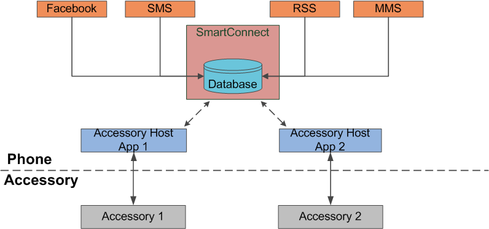

com.sonyericsson.extras.liveware.aef.notification.Notification
com.sonyericsson.extras.liveware.aef.notification.Notification
|
|||||||||
| PREV CLASS NEXT CLASS | FRAMES NO FRAMES | ||||||||
| SUMMARY: NESTED | FIELD | CONSTR | METHOD | DETAIL: FIELD | CONSTR | METHOD | ||||||||
java.lang.Object
public class Notification
Notification API is a part of the Smart Extension APIs.
The Notification engine enables the gathering of event-type data from different sources to one place so that accessory host applications will be able to access this data, instead of getting the data from each individual source. Examples of event-data are activity streams on a social network, new incoming SMS and MMS message notifications, a missed call notification, etc.
Application developers who wish to have their event-data presented by accessories (granted with the permission to access the Notification engine's data) should input their application's data according to the schema defined by the Notification API.
The following diagram shows the position of the Notification API in its operating context.

The Notification API defines and implements an ContentProvider that extensions access via the ContentResolver API. The ContentProvider implementation is backed by a database implementation. In order for an extension to interact with Notification API, the extension must have used theRegistration API
and inserted information in the extension table. See Registration API
for more information on how to insert a record in the extension table.
When needed, Android Intents are sent to the extensions to perform a task.
Extensions contribute their data using the set format dictated by the Notification API. As they are standalone Android applications in their own right, extensions may be uninstalled any time, unless they are part of the system image, and may be installed any time during the operation of the device. They may be 'disabled' as well by the end user via the user interface or by the extension developer; when 'disabled', data from that extension may not be displayed by the accessory host applications.
The accessory host applications provide the functionality to control and present the data that is collected by the notification engine. Depending on the purpose of the application, the notification engine may not be the only data source the application interacts with. Accessory host applications have read-access to the data provided by all the extensions, including the right to update some of the data fields. Due to this reason, access needs to be controlled and restricted so that unwanted information leaks are prevented; this is done through the use of a permission.
The purpose of the engine is to provide a central store for event-data from different sources that is of interest to present to the end user. The reasons for choosing such a design are accessory host application performance and data security. Cross-database queries are slow and even slower when there are potentially many databases involved and this will severely impact the performance of accessories and their perceived user experience. It is difficult and practically impossible to allow the 'correct' applications to access the extension-data when there are many databases to interact with. However tempting it may be, the purpose of the engine is NOT to be a central store for all kinds of data, e.g. files, media etc., such that it will be a "store room" for all kinds of extension-data.
Topics covered here:
Registration
There are three fundamental concepts in the Notification engine's database that developers are required to understand.
The concept of Extension is on Android APK level. The extension table of the registration database contains meta-information about each extension. The purpose of the extension is to provide the necessary data to the notification engine set by the database schema. The source of the extension's event-data may be self-generated, another Android ContentProvider, a Web server or a combination of these. The extension is a standalone application which may have its own GUI that also has the capability to provide data to be shown by a host application using the Notification engine, or it may not have its own GUI and it is completely dependent on the host applications that use the Notification engine to present its data.
Source is a logical abstraction introduced to enable extension developers
who want to distinguish the presentation of data connected to different
backends but retain the ability to package these in a standalone APK. A use
case example is an email aggregator extension that allows the user to connect to
different email accounts through the installation of only one Android package
file; each email account can be set as Registrationa Source or the extension defines only
one Source. In the latter scenario, emails from all accounts may be shown
in one view instead of separate views. Notification.Source stores attribute
information about a Source. The accessory host application may use this
information to filter event-data by Source or provide
configuration options on the user interface to filter event-data by
Source. Extension developers who wish to have the accessory host
application display events from different Sources
clearly should add Notification.Source information.
Up to 8 sources can be linked to an Extension.
If the limit
is reached, an exception will be thrown. A Source always has to be
linked to an Extension .
ContentResolver API
An Event is a representation of a notification that may be noteworthy
to present to the end user. Examples of events are incoming SMS
message notifications, a missed call notification, updates from friends on a
social network etc. Notification.Event is used to store events provided
by the extensions. The accessory host application typically uses the information
in this table to present the data. An Event is always connected
to a Source but a Source may not always have to have an
Event.
A maximum of 100 events from a Source
can be stored in Notification.Event; when the limit is reached, events will be automatically
removed.
Extensions only use the ContentResolver API to communicate with the
Notification engine's ContentProvider. For the possibility to react to user
input, extensions should implement at least an Android BroadcastReceiver to
catch Intents sent from the accessory host applications.
It is recommended for an extension to also implement a tunnel service using the Tunnel API
to prevent time sensitive intents from getting delayed.
Also see the Control API, Widget API and Sensor API documentation.
The list and descriptions of each Intent that extensions may listen to
are found in Notification.Intents together with the Intent-extra data
that are sent in each Intent.
In order to use the Notification API, an extension must first add information
in the extension table. This requires a specific permission. Refer to the documentation
of the Registration API for more information
An extension only has access to its own data: it is able to insert, query, update and remove its data that is stored on the Notification engine. When an application registered as an extension is uninstalled from the Android system, the associated data that is stored in the engine is automatically removed by the Notification engine's implementation.
If a extension developer wishes to allow another application to access its data on the engine through the use of sharedUserId, it is possible to do so though not recommended. When these two or more applications are registered as extensions, the Notification engine's security mechanism will only treat these extensions as one extension and the extension developer is responsible for any leakage or misuse of its information stored in the Notification engine's content provider.
Extension developers are free to sign their applications with their own certificate.
Before an application can take full advantage of the Notification engine,
it must tell the engine that it exists and for the engine to have a record
of this application's attributes. This process is known as registration and
after a successful registration, the application is referred as an extension in
the Notification engine's context. In practice, the process of registering
an extension involves the application inserting some data about itself using the
Registration API.
From the Notification engine's perspective, the life cycle of an extension starts from the time a successful registration takes place to the time the Android system uninstalls the application or the extension deregisters itself from the Notification engine. During this time, the extension is free to access the Event Stream engine and receive Intents from it.
As explained in an earlier section, Source is a logical abstraction introduced to easily enable the presentation of event-data originating from different backend. It is up to the extension developer to decide how to segment the event-data contributed by that extension, but all event-data must be connected to a Source, or else the insert operation for event-data will fail.
Setting the Source information in the ContentProvider should take place after the extension is successfully registered and before inserting event-data.
ContentValues values = new ContentValues();
Builder iconUriBuilder = new Uri.Builder().scheme(ContentResolver.SCHEME_ANDROID_RESOURCE)
.authority(getPackageName())
.appendPath(Integer.toString(R.drawable.icon));
values.put(SourceColumns.NAME, "RSS news feed");
values.put(SourceColumns.ENABLED, "1");
values.put(SourceColumns.ICON_URI_1, iconUriBuilder.toString());
...
uri = cr.insert(Source.URI, values);
The name of the Intent is Notification.Intents.REFRESH_REQUEST_INTENT.
Define your BroadcastReceiver to receive this Intent if you wish to rely on this to
trigger the event-data retrieval. Do not rely on the interval when this Intent is sent
as it may be arbitrary and completely dependent on the implementation of the Intent sender.
However it is always sent when a host application is started and an extension can use this to start
collecting data and continue to be be active.
When your extension has event-data to insert to the Notification engine's
ContentProvider, it may use
android.content.ContentResolver#insert(Uri, android.content.ContentValues)
or android.content.ContentResolver#bulkInsert(Uri, android.content.ContentValues[]).
The latter method is recommended for performance reasons to use when there are many
rows of event-data to insert.
ContentResolver cr = getContentResolver();
ContentValues[] valueArray = new ContentValues[count];
< fill valueArray with data >
cr.bulkInsert(Event.URI, valueArray);
When retrieving event-data from the data source, it is highly recommended your extension updates and retrieves other relevant data from the same data source, e.g. the user's latest status update, at around the same time. This is to minimize network signaling traffic and latency. It is also costly for battery consumption if there is too frequent network signaling activity.
If you need to synchronize periodically with a server in a network, consider
using the android.app.AlarmManager to achieve optimal power consumption.
The event-data supplied by your extension in Notification.Event may be a snapshot of
the information and the user has limited possibilities to interact with the
information presented by the accessory host application. The user may wish to
see all details related to that event and react to it, e.g. mark it as a
favorite, reply, watch the video etc. If your extension offers the user the
opportunity to interact with the event in your application or on a website,
listen for the Notification.Intents.VIEW_EVENT_INTENT Intent. This Intent
is sent by the accessory host application when the user performs an action
signaling the intention to view the event details. The Intent contains Intent-
data about the specific event-data that will enable your extension to launch the
detail view of that event.
The location of images is represented as a string. Images may be stored locally on the device or on the SD card.
The following URI schemes are supported:
In order to have a consistent database, the Notification Engine will enforce database data integrity upon any data inserted or updated by extensions. This is especially true for foreign keys. As an example, sourceId for an Event is a foreign key to the column _id in the Source table, thus the source_id must have a valid reference to a row in the Source table which in turn is associated with an extension. If values for the stated mandatory columns are not provided, SQLExceptions with constraint failures will be thrown.
For best performance, it is recommended the extension developer use
android.content.ContentResolver#bulkInsert(Uri, android.content.ContentValues[])
or android.content.ContentResolver#applyBatch(String, java.util.ArrayList)
when doing inserts or updates to the Event Stream's ContentProvider.
| Nested Class Summary | |
|---|---|
static interface |
Notification.Event
Definitions used for interacting with the event table. |
static interface |
Notification.EventColumns
Column-definitions for the event table. |
static interface |
Notification.Intents
Intents sent to extensions by the host applications either using the broadcast queue or Tunnel. |
static interface |
Notification.Source
Definitions used for interacting with the Extension-table. |
static interface |
Notification.SourceColumns
Column-definitions for the Source table. |
static interface |
Notification.SourceEvent
Definitions used for interacting with the source event join query. |
static interface |
Notification.SourceEventColumns
Column-definitions for the source event join query. |
| Field Summary | |
|---|---|
static java.lang.String |
AUTHORITY
Authority for the Notification provider. |
protected static Uri |
BASE_URI
Base URI for the Notification provider. |
| Constructor Summary | |
|---|---|
protected |
Notification()
|
| Method Summary |
|---|
| Methods inherited from class java.lang.Object |
|---|
clone, equals, finalize, getClass, hashCode, notify, notifyAll, toString, wait, wait, wait |
| Field Detail |
|---|
public static final java.lang.String AUTHORITY
protected static final Uri BASE_URI
| Constructor Detail |
|---|
protected Notification()
|
|||||||||
| PREV CLASS NEXT CLASS | FRAMES NO FRAMES | ||||||||
| SUMMARY: NESTED | FIELD | CONSTR | METHOD | DETAIL: FIELD | CONSTR | METHOD | ||||||||